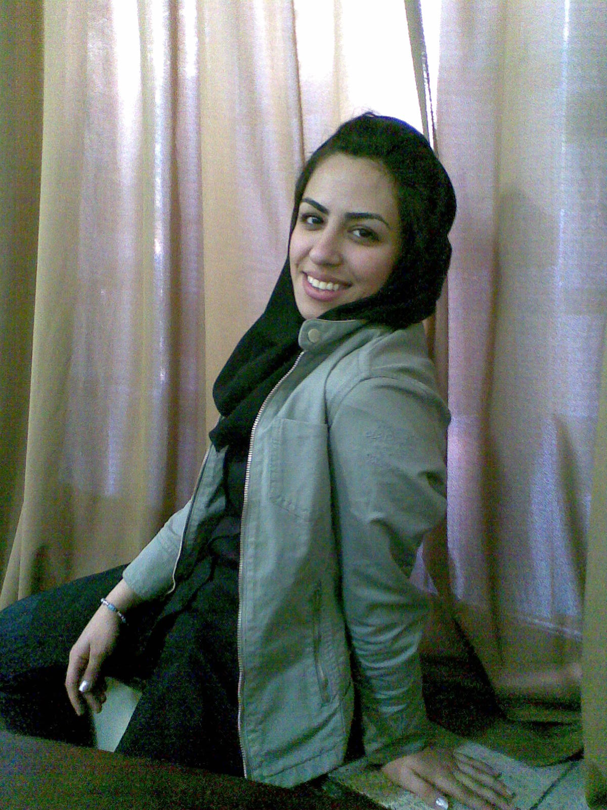

پذيرش > تریبون > مقالات > گذار به برابری/ شهرزاد آل داوود


 گذار به برابری/ شهرزاد آل داوود گذار به برابری/ شهرزاد آل داوود
14 تیر 1389 - - نسخه قابل چاپ
تغییر برای برابری - وقتی ایرانیان در گیرودار انقلاب مشروطه خود بودند،زنان در اروپا برای حق رای مبارزه میکردند. البته حق و آزادی زن در زمان انقلاب مشروطه و پس از آن به رسمیت شناخته شده بود، اما به صورت مشروط. به این معنی که در انقلاب مشروطه وقتی مدرنیسم مطرح میشود، افرادی چون دهخدا و تقیزاده بر این باورند که برای مدرن شدن ایران، زنان نیز باید مدرن شوند. اما زن هنوز به عنوان شخصیتی مستقل در افکار آن دوران شناخته شده نیست، بلکه مدرن شدن زن به این معناست که او باید مادر بهتری باشد که بعد بتواند بچههای بهتری را تربیت کند و نتیجتاً ایران مملکت مدرنتری بشود. اما این در هر صورت خوب است زیرا آن بدین معنیست که همان زنی که در جامعه ای با پشتوانه چندهزار ساله پدرسالارانه به خود حتی اجازه فکر کردن به تحصبل و داشتن حقوق اجتماعی را نمیداد، حالا تحصیل می کند، از منزل بیرون میرود و در انجمنهای سیاسی فعالیت می کندنکته ای که در اینجا قابل توجه است این میباشد که زنان زیادی در آن دوره به مبارزه برای احقاق حقوق زنان نمی پرداختند.از این حیث میتوان مقایسه ای با مبارزه با برده داری در آمریکا داشت.در واقع این طور نبود که تعدادی برده در راس جنبش قرار داشته باشند زیرا اصولا تعداد بسیار کمی از بردگان می توانستند فرار کنند و امکانات تحصیل داشته باشند که اصلا بتوانند چیزی بگویند. حرف هایشان توسط جنبش ضد برده داری که افراد فعال در آن همگی سفید پوست بودند مطرح می شد.در مبارزات زنان در دوره مشروطه نیز که دست کمی از برده ها در آمریکا ندارد تعداد بسیار محدودی از زنان با شهامت زیاد بیرون آمدند و حرف هایی زدند و کارهایی کردند که در جامعه آن روز که زن حق هیچ گونه فعالیتی در اجتماع و بهره مندی از تحصیل نداشت تغییرات فرهنگی ژرفی ایجاد نمودند.
این مساله ادامه پیدا می کند و در زمان کشف حجاب هم بحث بر سر همین است که زن باید مدرن باشد تا بچههایی مدرن تربیت کند و جامعهای مدرن تحقق یابد. در زمان مصدق این گفتمان ادامه دارد و به صورت این است که خانوادهها اجازه بدهند دخترهایشان از منزل بیرون بیایند، دیرتر ازدواج کنند، تحصیل کرده باشند و حتی کار کنند و یا فعالیت سیاسی داشته باشند و حق رای پیدا کنند،اما مشروط بر این که همچنان یک مادر خوب یا همسر خوب باشند. پس ما شاهد یک رشد آرام در ارتباط با آزادیهای سیاسی و اجتماعی زنان بعد از دوران مشروطه هستیم، اما این رشد پس از سالهای 1975 متوقف و حتی پسرفت می کند. آن سالها مصادف بود با تحولات عظیمی که در حوزه زنان در غرب اتفاق افتاد. جنبش فمینیستی در غرب به طور کلی معنی آزادی زن را تغییر داد. پس در اینجا توقعات زنان در اجتماع به واسطه رشد آزادیهای اجتماعی تغییر کرده و بالا رفته بود، به این معنی که دیگر حاضر نبودند با کسی که پدرشان می گوید ازدواج کنند یا اساساً زود ازدواج کنند، ازدواج اگر نامعقول باشد طلاق میگیرند و پس از آن در خانهای جدا زندگی میکنند و به دنبال حضانت اولاد میروند. برای اولین بار در خاورمیانه زنی وجود دارد که زیر بار پدر، همسر و یا برادر خود نیست. در همان زمان ها تحولاتی که در حوزه ی زنان در غرب رخ می داد و در نشریات بین المللی انعکاس پیدا می کرد ،باعث میشد جامعه همچنان سنتی ایران، تحولات به وجود آمده را که سریع اتفاق افتاده و عمر زیادی نداشت با غرب مقایسه کند و بیم به وجود آمدن آن شرایط در ایران را داشته باشد. جامعه به لحاظ تاریخی پذیرای تحولات در حوزه ی زنان نبود و زنان نیز فعالیت های مبارزاتی خود را با دستگاه دیوان سالاری عجین کرده بودند.برای این کار یک توجیهی وجود دارد.اینکه در دوره رضا شاه جنبش زنان ایران تصمیم میگیرد با یک حکومت اتوریته غیر دموکراتیک که با توجه به شرایط روز تصمیم دارد کارهایی در رابطه با زنان انجام دهد، همراهی کند تا اینکه همراه شود با جنبش های ضد دیکتاتوری که یا چپ هایی بودند که خیلی زود به زندان افتادند و یا قشریون مذهبی بودند که به طور کلی با حرکت های زنان مخالفت داشتند. لذا یک عقبگرد در حوزه زنان اتفاق میافتد و خشمی که در مورد زنان وجود داشت تقریبا در همه اقشار اجتماع وجود داشت.البته نظیر این تحولات در غرب نیز رخ داد، منتها کمی زودتر.
پس از انقلاب 57 خشم و ضدیتی که نسبت به زن در جامعه وجود داشت به نوعی کمرنگ می شود، در عین حال که انقلاب 57 بسیاری از حقوق زنان را در زمینههای حق طلاق، ازدواج، حضانت و ....از آنها سلب می کند، اما این اطمینان را می دهد که حالا دیگر یک جامعه اسلامی وجود دارد و لذا بسیاری از خانوادههای سنتی که به دخترانشان اجازه تحصیل و یا کار کردن نمیدادند، حال فرزندان خود را به خوابگاههای دانشجویی در شهرهای دیگر میفرستند. پس از انقلاب 57 دولت خود شروع به آوردن زنانی در نهادهای اسلامی کرد و در زمان جنگ خیلی از ایشان به جنگ رفتند.
پس مشاهده میشود که باز زنان تشویق به ادامه تحصیل ،کار و فعالیت های اجتماعی میشوند و به جامعه برمیگردند. لذا دوباره این مساله مطرح است که زن تحصیل کرده خواستهایی پیدا می کند.البته این بار خواست هایی که تا پیش از این فمینیستی خوانده میشد، حال در فکر آن زن حق طبیعی و مسلم به حساب می آید.
البته نکته ای که در اینجا مطرح است این میباشد که حالا فقط پیشرفت های اینچنینی در حوزه زنان مختص به ایران نیست.بلکه در دیگر کشورها مثل اردن،مصر،لبنان،سوریه یا کشورهای خلیج فارس درصد باسوادی بسیار بالاست.اینکه اکثریت جمعیت دانشگاه را دختران تشکیل می دهندمختص ایران نیست بلکه پدیده ای جهانیست.
اما اتفاقا ایران در قیاس با دیگران عقب ماندگی هایی دارد. یکی از آن ها مسئله اشتغال است که در مقایسه با کشورهایی نظیر اردن ،لبنان،تونس ،اندونزی یا ترکیه درصد بسیار پایینی دارد و در مقابل کشورهای پیشرفته تر اصلا قابل قیاس نیست . با ارائه و خیلی مواقع تصویب طرح ها و لایحه هایی در سال های اخیر در حوزه کاری زنان،همچون کم کردن ساعت کاری خانمها و یا نپذیرفتن ایشان در پست ها مدیریتی و رده های بالا با وجود داشتن تحصیلات و صلاحیت لازم و در خیلی موارد بهتر از داوطلب مردی که در نهایت انتخاب می شود، اوضاع اشتغال زنان در ایران بغرنج تر خواهد شد و البته پر واضح است که موارد و تبعیضاتی از این دست تاثیر مستقیم در حوزه های فرهنگی،اجتماعی و اقتصادی خواهد داشت.
یکی دیگر از موارد عقب ماندگی ایران در این حوزه،وجود قوانین تبعیض آمیز علیه زنان میباشد.قوانین تبعیض آمیز و اغلب تحقیر کننده ای که در ایران وجود دارد بسیار عقب مانده تر از واقعیت زنان در ایران میباشد.در واقع این قوانین در برابر پیشرفت های فرهنگی_اجتماعی زنان ایستاده اند و اغلب با بی توجهی و گاهی متاسفانه با لجبازی مسوولین همراه هستند.در این بین لایحه هایی نیز به مجلس ارائه می شوند که نمود بی تدبیری و عدم فکر صحیح در پس پشت آن نمایان است.مانند لایحه حمایت از خانواده که یک شکست فرهنگی و اجتماعی برای مسوولین و نمایندگان است.زیرا این لایحه فقط یک لایحه ی ضد زن نیست بلکه به زیر سوال بردن و نادیده گرفتن روابط انسانی میان زن و مرد در ازدواج های دائم یا موقت است.
اینها همه میرساند که زنان ،اکنون، با توجه به مبارزات اجتماعی و سیاسی ایشان به طور کلی یا در حوزه زنان بسیار پیشرفته تر و رو به جلو تر از حاکمیت عمل میکنند.و به تغییرات کلی و اساسی در مورد زنان در حوزه های مختلف اشتغال و یا قوانین نیاز است
ارسال به
بالاترین
،
توییتر
،
فریندفید
،
فیسبوک
در همين بخش :
 دهمین دورۀ مراسم تندیس صدیقه دولت آبادی ۱۳۹۲ دهمین دورۀ مراسم تندیس صدیقه دولت آبادی ۱۳۹۲
کارت پستالهایی به بهانهی هشت مارس و به یاد همهی مبارزین راه برابری
بیانیه بیش از 350 تن از مدافعان حقوق زنان به مناسبت روز جهانی زن؛ زنان هر روز فرودستتر میشوند
لباسی که برای تن ما دوخته اند! /اعظم بهرامی
چالشها و چشمانداز فعالیت مدنی زنان
ديگر بخش ها :
طرح یک میلیون امضا
|
مقالات
|
سایت نوشته ها
|
اخبار
|
گزارش كمپين
|
گفت و گو
|
علیه سکوت
|
كوچه به كوچه
|
نامه های شما
|
گزارش ویژه
|
گفتگو با اعضا
|
ویژه سالگرد کمپین
|
تصویر برابری
|
دل آرام علی
|
تریبون
|
مقالات
|
تاریخ شفاهی
|
خارج از چارچوب
|
کتابخانه
|
درباره کمپین
|
کمپین در شهرها
|
کمپین در بند
|
صدای تغییر
|
ویژه 22 خرداد
|
لایحه حمایت از خانواده
|
گالری
|
عشا مومنی
|
امیر یعقوبعلی
|
خدیجه مقدم
|
راحله عسگری زاده و نسیم خسروی
|
پروین اردلان،جلوه جواهری، مریم حسین خواه، ناهید کشاورز
|
زینب پیغمبرزاده
|
سعیده امین، سارا ایمانیان، محبوبه حسین زاده، ناهید کشاورز و همایون نامی
|
احترام شادفر
|
نسیم سرابندی زاده،فاطمه دهدشتی
|
وبلاگ مهمان
|
پرونده خرم آباد
|
دستگیری ها
|
مریم مالک
|
پرستو اللهیاری
|
مهرنوش اعتمادی
|
سمیه رشیدی
|
Other Languages
|
همراهان
|
«فراخوان کمپین ده روز با بهاره هدایت»
| English
|